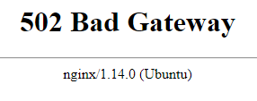

Nginx Configuration
The next step is to modify the Nginx config file so that Nginx routes requests on to JupyterHub.
The Nginx configuration step was the hardest part for me when I set up the first JupyterHub server. The Nginx config file isn't Python code or a bash script. I went through many different configurations until I finally got one that worked.
The big initial problem was that I copied the sample Nginx config that's up on the JupyterHub docs. But the Nginx config posted on the JupyterHub docs is not a complete Nginx config, it contains just the server portion. I didn't know that the whole server portion needed to be enclosed in another frame.
Determine number of cores and core limitations
You can determine the number of cores running on your server and what the limits of those cores are with a couple commands. Information about our server's cores will be put in the Nginx configuration later. Usually, you will have requested a four core VM.
The first command determines the number of cores on the server:
$ grep processor /proc/cpuinfo | wc -l
If this command returns 4 then we have 4 core on your server. Then 4 is the number of worker_processes to set in our Nginx configuration
The second command determines the core's limitations:
$ ulimit -n
If this command returns 1024, then that's the number of worker_connections we should set in our Nginx configuration.
Based on the results of these two commands, we will modify the top of the nginx.conf file
worker_processes 4; worker_connections 1024;
Modify nginx.conf
To modify nginx.conf, cd into the /etc/nginx directory. The nginx.conf file should be there along with a couple other files and directories.
$ cd /etc/nginx $ ls conf.d koi-utf nginx.conf sites-available ssl fastcgi.conf koi-win proxy_params sites-enabled uwsgi_params fastcgi_params mime.types scgi_params snippets win-utf $ sudo nano nginx.conf
At the top of the file, paste in our information about worker_processes and worker_connections
user www-data;
worker_processes 1;
pid /run/nginx.pid;
include /etc/nginx/modules-enabled/*.conf;
events {
worker_connections 1024;
# multi_accept on;
}
...
Close the configuration file (using [Ctrl]+[x], [y]) and restart Nginx. Check the status to make sure Nginx is active
$ sudo systemctl restart nginx $ sudo systemctl status nginx
You should see that Nginx is activate and running.
Modify sites-available
For each site served by nginx, there is a configuration file in sites-available that is linked using a symbolic link to the sites-enabled directory. The nginx.conf file shows that it will include /etc/nginx/sites-enabled/*.
That directory already contains a default configuration file with entries from Certbot. We start by copying that file over to a new one and then modify it to include the JupyterHub settings.
$ cd /etc/nginx/sites-available $ sudo cp default jupyterhub $ sudo nano /etc/nginx/sites-available/jupyterhub
Leave the server block at the end intact (redirecting all http traffic to https), it should look something like this:
server {
if ($host = m09vm14.ma.tum.de) {
return 301 https://$host$request_uri;
} # managed by Certbot
listen 80 ;
listen [::]:80 ;
server_name m09vm14.ma.tum.de;
return 404; # managed by Certbot
}
Remove any other server blocks that contain a listen 80 statement. There is also a server block with a listen 443 statement that ends with the following lines:
listen [::]:443 ssl ipv6only=on; # managed by Certbot listen 443 ssl; # managed by Certbot ssl_certificate /etc/letsencrypt/live/m09vm14.ma.tum.de/fullchain.pem; # managed by Certbot ssl_certificate_key /etc/letsencrypt/live/m09vm14.ma.tum.de/privkey.pem; # managed by Certbot include /etc/letsencrypt/options-ssl-nginx.conf; # managed by Certbot ssl_dhparam /etc/letsencrypt/ssl-dhparams.pem; # managed by Certbot
Remove everything else from that server block, then add the following lines:
location / {
proxy_pass http://127.0.0.1:8000;
proxy_set_header X-Real-IP $remote_addr;
proxy_set_header Host $host;
proxy_set_header X-Forwarded-For $proxy_add_x_forwarded_for;
proxy_set_header X-NginX-Proxy true;
#proxy_http_version 1.1;
proxy_set_header Upgrade $http_upgrade;
proxy_set_header Connection "upgrade";
}
location ~ /.well-known {
allow all;
}
Save and close the `/etc/nginx/sites-available/jupyterhub file.
Link sites-available to sites-enabled
Now that we have a jupyterhub server configuration in the sites-available directory, we need to create a symbolic link to the sites-enabled directory so the server blocks we wrote will be run by Nginx.
To create the symbolic link, use the command below:
$ sudo ln -s /etc/nginx/sites-available/jupyterhub /etc/nginx/sites-enabled
Finally, remove the default site:
$ sudo rm /etc/nginx/sites-enable/default
Test out the new Nginx configuration
OK, fingers crossed... Now we are going to check if our Nginx configuration is valid and works correctly. First we can check for configuration errors with the command below:
$ sudo nginx -t
What we are looking for is output like below. If there are any errors, you need to go back and trouble shoot the Nginx configuration.
nginx: the configuration file /etc/nginx/nginx.conf syntax is ok nginx: configuration file /etc/nginx/nginx.conf test is successful
Now restart Nginx and take a look at the status.
$ sudo systemctl restart nginx $ sudo systemctl status nginx # [Ctrl]+[c] to exit
We are looking for something like:
Loaded: loaded (/lib/systemd/system/nginx.service; enabled; vendor preset: enabled) Active: active (running) since Thu 2019-02-07 00:40:10 UTC; 7s ago
Now browse to the domain name we added to the server. If you use http://m09vm4.ma.tum.de you should be re-directed to https://m09vm4.ma.tum.de.
Since JupyterHub isn't hooked up to Nginx yet, you should see a 502 Bad Gateway Error. But that error should show nginx in the error text.

Summary
In this section we modified the nginx.conf file and created a server configuration in /etc/nginx/sites-available. Then we created a symbolic link from the file in sites-available to sites-enabled and disabled the standard nginx site.
Then we checked the Nginx configuration was valid and restarted Nginx.
Next Steps
The next step is to configure JupyterHub by creating and modifying a jupyterhub_config.py file.